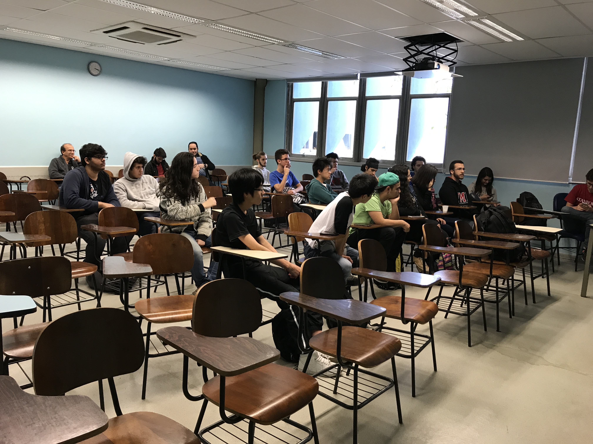
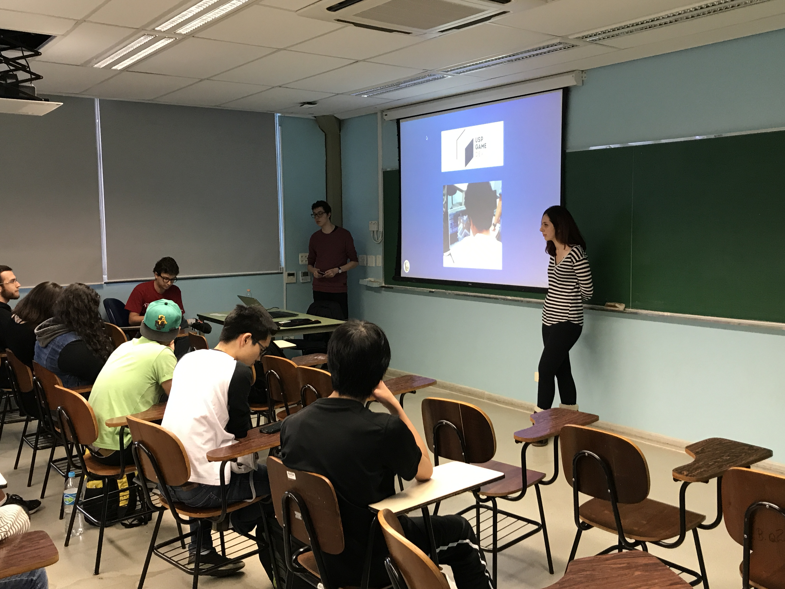

18/08/2017 | 15h | 2 horas
A Palestra do Ensino Médio é um subevento do Encontro do BCC desde 2015. Costumamos fazer no dia em que as inscrições para a FUVEST são abertas, geralmente na terceira sexta-feira de agosto. Ela é ministrada por um aluno do segundo ano. Em 2015, pelo Nathan Proença. No ano passado, foi minha vez. Neste ano, ela foi dada pelo Leonardo Lana e pela Beatriz Marouelli.
Os slides usados na palestra foram esses, que foram inspirados nos meus slides, que por sua vez, são baseados nos slides do Nathan.
A palestra começa com as diferenças entre os principais cursos relacionados a computação e informática na USP: o Bacharelado em Ciência da Computação (IME), a Engenharia da Computação (POLI) e o Bacharelado em Sistemas de Informação (EACH).
Depois disso, eles falaram um pouco das atividades realizadas pelos grupos de extensão no IME. Esse ano, essa parte foi um pouco maior, dado que vários grupos estão surgindo. Falamos sobre o USPGameDev, o HardwareLivreUSP, o IME Workshop, o MaratonIME, o IMESec e o grupo de MachineLearning do IME, que surgiu recentemente.
A parte final de palestra foi de Perguntas e Respostas. Alguns de nós, já alunos do BCC, fizemos algumas perguntas relacionadas a temas que não foram mencionados na apresentação, para aquecer a rodada. Perguntamos sobre ingresso via FUVEST, transferência interna, estágios, o porquê de fazer USP em vez da UNICAMP e questões relacionados ao trote. Foi um momento legal, em que houve participação dos palestrantes, dos alunos veteranos e dos vestibulandos.
O subevento ocorreu com sucesso, e em torno de 20 pessoas estavam presentes.
Seguem fotos do evento:
Os participantes.
Os palestrantes.
O cartaz feito por integrantes do Encontro do BCC pode ser visto aqui.
Feito com ❤️ por Luís Felipe de Melo.
CSS original de jasonm23.
{kind=link}